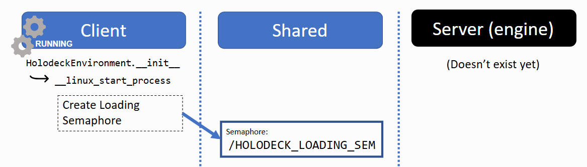
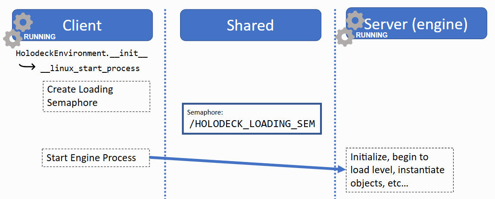
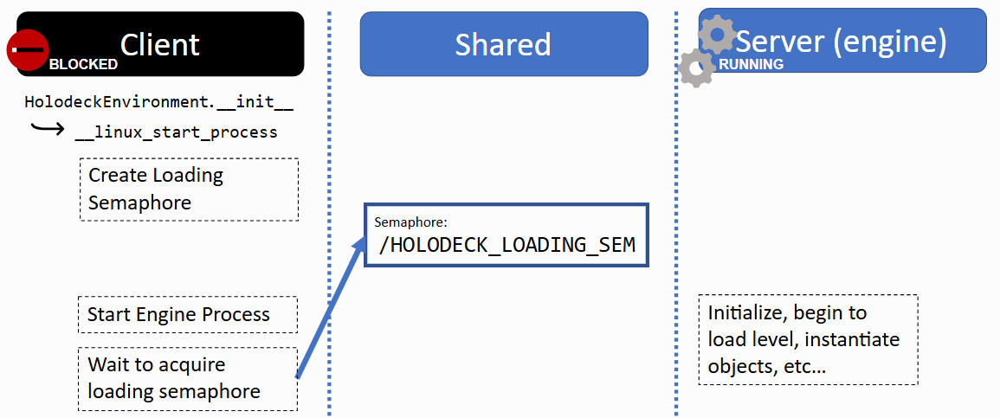
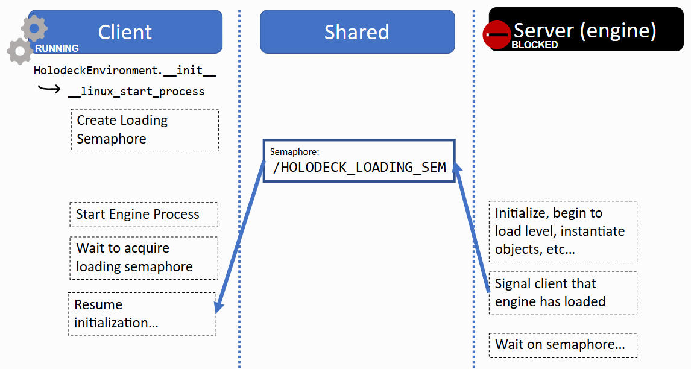
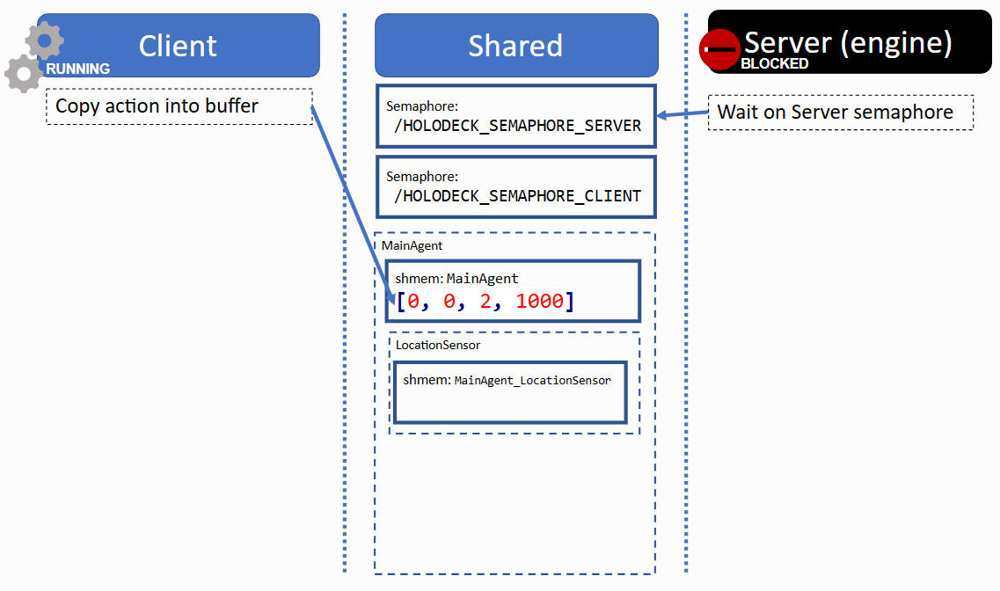
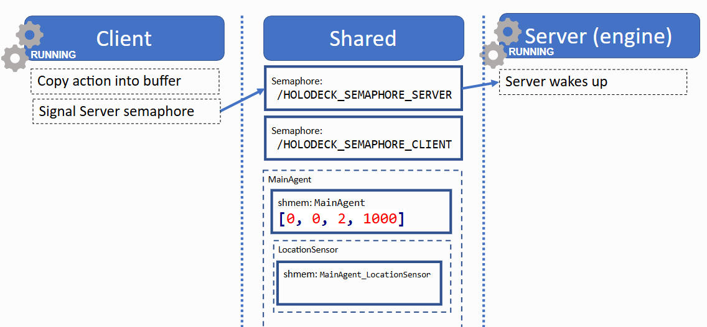
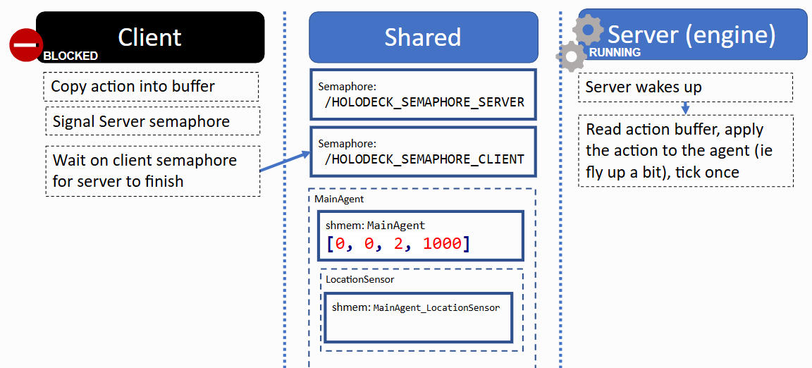
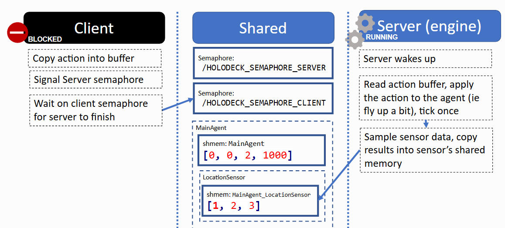
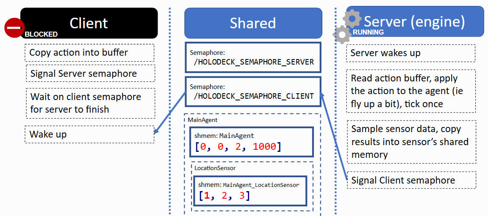
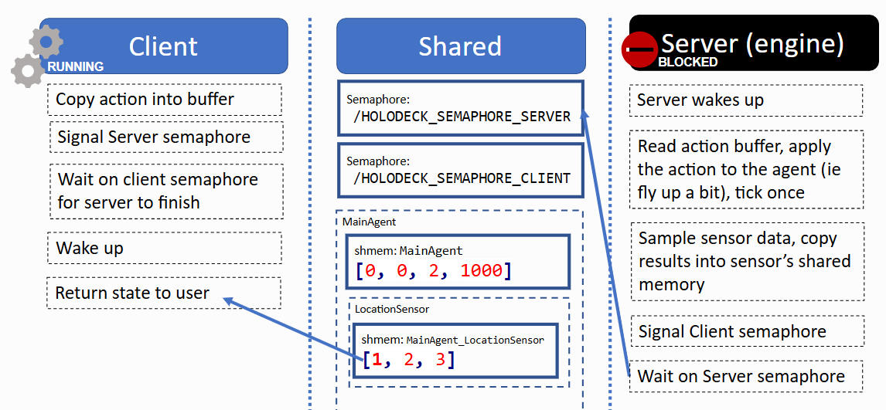

通信协议
在本页面中，我将解释 holoocean 的两个部分（客户端和引擎）如何通信。
预备阅读材料
holoocean 的两个部分
我们所说的“holoocean”实际上是两个独立的模块。
holoocean
-
也称为：- “Python 端” - “客户端” - 但负责初始化“服务器”
-
是一个可通过 pip 安装的 Python 包
-
用户仅与此包交互
-
主要负责与引擎进行数据交换
-
负责初始化引擎和训练场景
Underwater
简单使用示例
在本示例中，我们将解释 holoocean 和 Underwater 之间需要进行哪些通信才能使此示例正常运行：
import holoocean
# (1). 启动引擎
env = holoocean.make("SimpleUnderwater-Hovering")
for i in range(10):
# 初始化关卡及其内部的主代理
env.reset()
# 准备一条要发送给主代理的命令
command = [0, 0, 2, 1000]
for _ in range(1000):
# (2). 向代理发送命令，执行模拟，并返回来自引擎的信息
state = env.step(command)
第 1 部分：holoocean.make()
holoocean.make() 函数主要是一个辅助函数，用于实例化 HoloOceanEnvironment 对象。.make() 会加载一个配置文件，并将相应的参数传递给 HoloOceanEnvironment 的 __init__() 函数。
__init__() 函数主要执行以下三项操作：
1.启动 holoocean-engine 进程，并告知其所需的最小加载量
2.创建 HoloOceanClient 实例
-
创建同步信号量
-
提供
malloc()函数，用于在客户端分配共享内存 -
传感器、代理等使用此函数
3.实例化代理和传感器，它们使用 malloc() 函数分配缓冲区
创建加载信号量
“加载信号量”由客户端创建，并由引擎发出信号。
服务器进程启动后，客户端会等待服务器发出信号，以便确认服务器已初始化完成。

启动子进程
接下来，客户端将创建引擎子进程。它会在引擎的命令行中传入一个 UUID，该 UUID 将用于生成唯一的信号量名称。

关于 UUID 的说明
信号量（semaphore）和共享内存的名称（例如 /HOLODECK_LOADING_SEM）在整个操作系统内的所有进程间是全局可见的。
为了避免不同 Holodeck 实例之间发生命名冲突，holoocean.make() 会为创建的每个环境生成一个 UUID，并将其作为命令行参数传递给引擎，例如：
holodeck.exe --HolodeckUUID=8ac7059c-fb71-48fb-a0b1-a1ea8a4c6c10
该 UUID 会被附加到信号量或共享内存的名称后面，从而支持多个实例同时运行，例如：
/HOLODECK_LOADING_SEM8ac7059c-fb71-48fb-a0b1-a1ea8a4c6c10
如果未提供 --HolodeckUUID 参数，则默认值为空字符串（""）。这在调试时非常有用。
等待引擎加载
引擎正在初始化，客户端等待 /HOLODECK_LOADING_SEM 完成。

引擎加载完成
引擎加载完成后，将等待另一个信号量，同时客户端执行其他操作。

此时，客户端通过发送一系列命令来生成代理、传感器和任务。
本页未详细介绍这一点，但就我们的目的而言，重要的是每个代理和传感器都会分配共享内存缓冲区，以实现引擎和客户端之间的通信。
主同步信号量
在 HoloOceanEnvironment 的 __init__() 方法中，它会创建一个 HolodeckClient 对象，该对象会生成两个重要的同步信号量。这些信号量使得引擎和客户端能够同步运行，并交替执行（参见 HolodeckServer.cpp / holooceanclient.py）。
/HOLODECK_SEMAPHORE_SERVER
-
被称为信号量
- 这名字是谁起的？
-
引擎在客户端执行任何操作时都会等待这个信号量。
-
这会阻塞游戏主循环！
-
引擎窗口在等待信号量时会显示为锁定状态。
-
您无法关闭、调整大小或移动窗口。
-
https://github.com/BYU-PCCL/holodeck/issues/18
-
/HOLODECK_SEMAPHORE_CLIENT
-
称为信号量2（semaphore2）
-
客户端会等待此信号量，同时引擎会模拟一个时钟周期。
-
当客户端准备好让引擎模拟下一个时钟周期时，客户端会向
/HOLODECK_SEMAPHORE_SERVER发送信号。
我们将在下文中看到这些信号量的使用方法。
共享内存缓冲区
共享内存缓冲区在 Holoocean 中用途广泛。
1.用于来回发送命令
- 例如：生成代理、移动视窗等
2.代理
-
动作缓冲区（
uuid+ 代理名称）- 告知代理客户端在每个游戏刻提供的输入
-
传送标志（
_teleport_flag）、传送缓冲区（_teleport_command）- 指示代理是否以及应该传送到哪里
-
控制方案（
_control_scheme）- 告知引擎代理正在使用的控制方案（如何解释动作缓冲区）
3.传感器
- 传感器数据缓冲区（代理名称
_+ 传感器名称）
第 2 部分：.step()
现在我们已经有了一个运行环境，那么如何实现数据之间的双向传输呢？
我们将分析以下代码的执行过程：
state = env.step([0, 0, 2, 1000])
1.代理的操作
首先，我们将提供的动作（[0, 0, 2, 1000]）复制到代理的操作缓冲区中：

2.信号服务器
接下来，客户端向 信号量服务/HOLODECK_SEMAPHORE_SERVER 发送信号，唤醒服务器。

3.客户端等待，服务器处理

4.服务器对传感器数据进行采样，并将其复制到缓冲区

5.唤醒客户端

6.服务器阻塞并等待客户端再次发出信号

备注
一些值得注意的事项。
1.复制到共享缓冲区的数据会持续存在。如果写入了一个操作，该操作将一直执行，直到写入另一个操作为止。传感器数据也是如此。
2.引擎的默认 UUID 为空字符串""。这意味着，如果您从编辑器或 Visual Studio 启动引擎，并且在创建 HoloOceanEnvironment 对象时指定 UUID 为空字符串""，则可以使用 Python 客户端连接到该引擎。